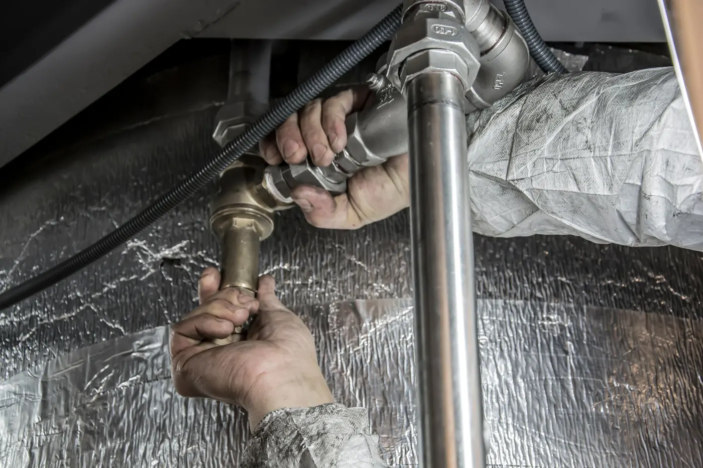
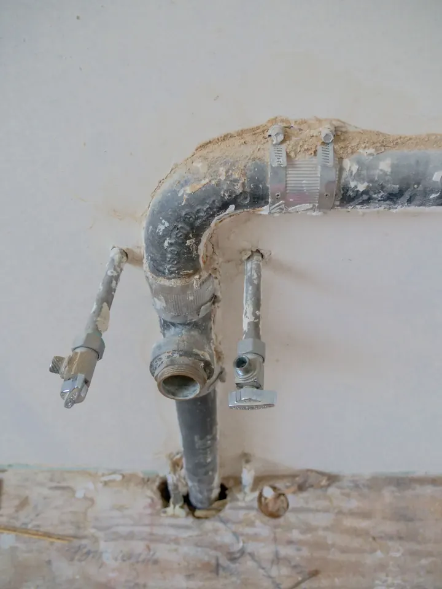

Plumbing trouble in Tyler? Call Calvary.
Plumbing services for Tyler and the surrounding towns within 30 miles. Tell us what is going on, we pick up the phone Monday to Friday.

49 reviews
What is going on at your place?
Pick the closest match. You get safe first steps right away, then one tap to call.
Water leak right now: first steps
- Shut off the main water valve (where the line enters the house, or at the meter).
- Open a low faucet to drain the pipes and ease the flow.
- Move valuables away, take photos for your insurance.
- Call us. Our Leak Guide has a checklist.
General safety tips, not a diagnosis. Which jobs Calvary takes: ask when you call (service list unverified).
No hot water: first steps
- Electric heater: check the breaker and the thermostat setting.
- Gas heater: check that the pilot light is on and the gas valve is open.
- Wait 30 to 60 minutes after resetting, then test a hot tap.
- Still cold, or you see water around the tank? Call us.
General safety tips, not a diagnosis. Which jobs Calvary takes: ask when you call (service list unverified).
Clogged drain: first steps
- Stop running water into the drain.
- Try a plunger. Skip chemical drain cleaners: they can damage pipes and are hazardous for the person who opens the drain next.
- If several drains back up at once, the main line may be blocked. Stop using water and call us.
General safety tips, not a diagnosis. Which jobs Calvary takes: ask when you call (service list unverified).
Toilet keeps running: first steps
- Lift the tank lid and check that the flapper seals and the chain is not tangled.
- Close the small stop valve behind the toilet to stop the water until it is fixed.
- Not sure what you are seeing? Call us and describe it.
General safety tips, not a diagnosis. Which jobs Calvary takes: ask when you call (service list unverified).
Low water pressure: first steps
- Is it one faucet or the whole house? One faucet is often a clogged aerator.
- Check that the main shut-off valve is fully open.
- Whole-house low pressure, or a sudden change: call us.
General safety tips, not a diagnosis. Which jobs Calvary takes: ask when you call (service list unverified).
Smell of gas: first steps
- Get everyone outside.
- From outside, call 911 and your gas utility.
- Call a plumber only after the gas company clears the house.
General safety tips, not a diagnosis. Which jobs Calvary takes: ask when you call (service list unverified).
Do we come to your town?
Calvary serves Tyler and surrounding towns within 30 miles. Tap your town to see how far it is.
- Tyler
- Whitehouse
- Bullard
- Lindale
- Hawkins
Schematic map. Radius from the company's Facebook page ("Tyler and surrounding town within 30 miles radius"). Town positions and distances are approximate, measured from Tyler center, and not provided by Calvary (unverified). The final say is a phone call.
Local and well rated
Figures taken from public listings. Click the sources in the footer to verify.

Know where your shut-off valve is
The fastest way to limit water damage is to stop the water. Find your main shut-off valve and every small stop valve under sinks and toilets before you need them.
Our step-by-step leak guide takes five minutes to read and has a checklist you can tick off on your phone.
Ready to talk to a plumber?
Call during business hours or leave a message and we call you back.